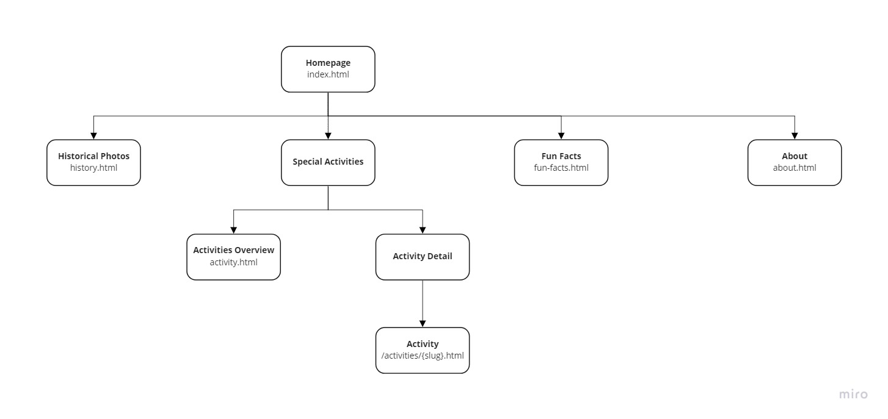
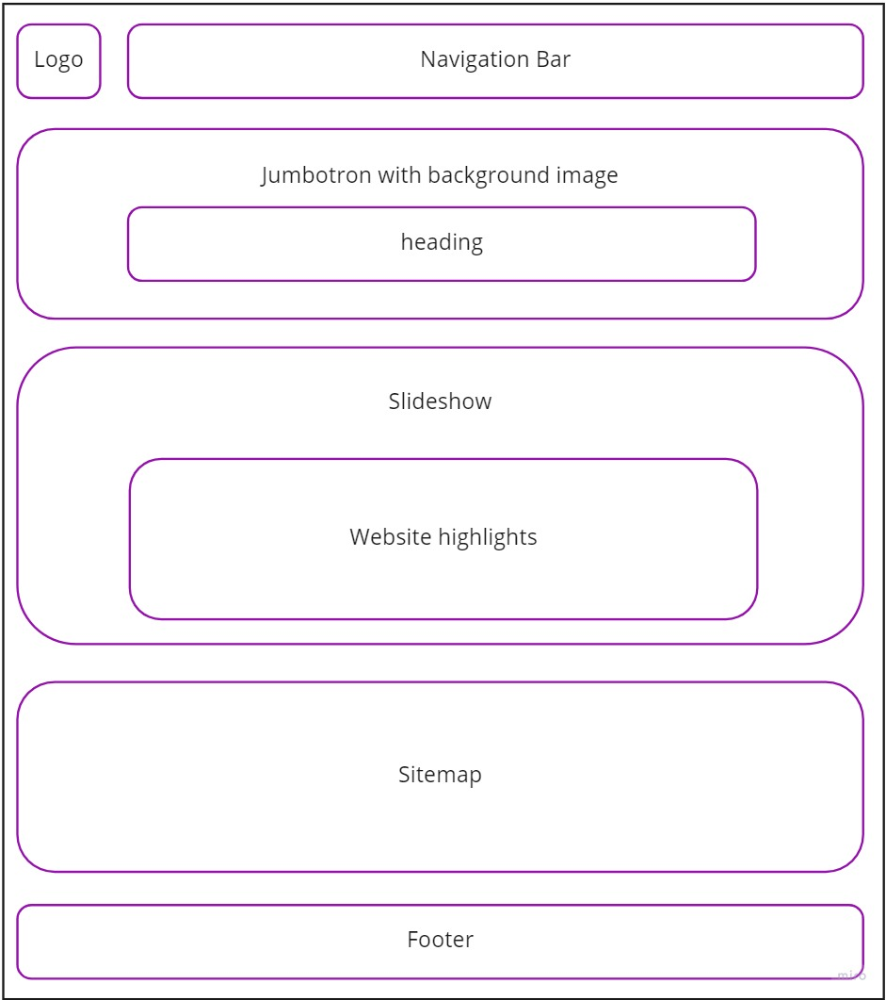
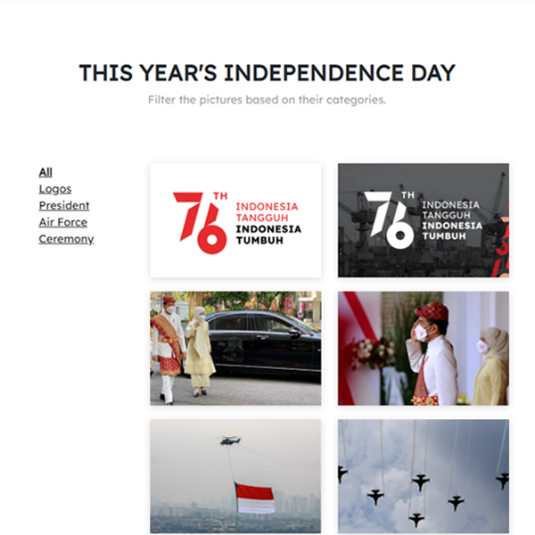
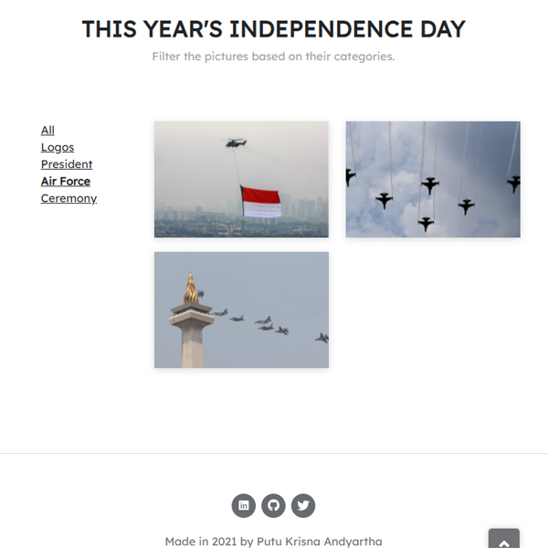

See what I have made.
A website that celebrates Indonesia's 76th Independence Day. Link
I had a blast making this website during the Web Design course. The path started by what the lecturer call "Storytelling". Basically describing what is the website about, who are going to be interested in it, how it is going to look like or implemented, and the like. This process helped me a lot later on when I actually starting to code the website.
Afterwards, I was assigned to clearly define the website's structure. Where it would explain how many pages were planned and how the pages relate to one another. Although I did not strictly follow what I envisioned, I believe it came out pretty close.
I needed to plan out how the pages would look like, for example like how I planned the home page should look like.
In the final version, I decided to change "fun facts" to a page showcasing how this year's Independence Day was like. With the help of jQuery, I was able to make a simple filter of the images shown.
 The website was then to be deployed into a server prepared. I learnt a bit more about FTP through it. But most likely it is inaccessble by the time you read this.